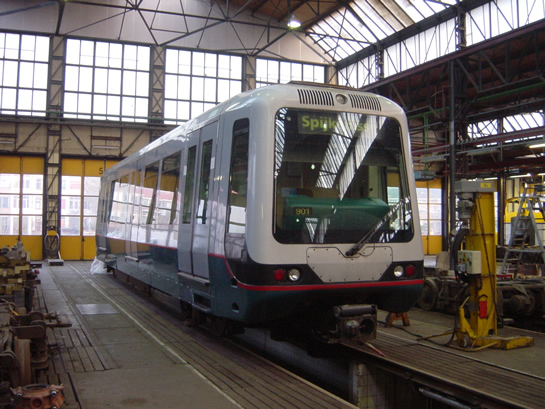
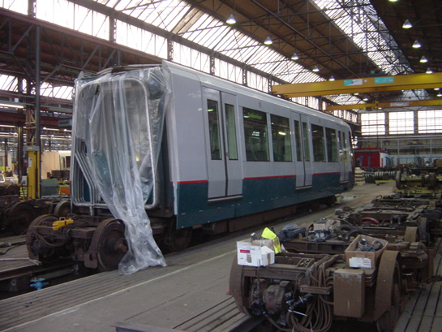
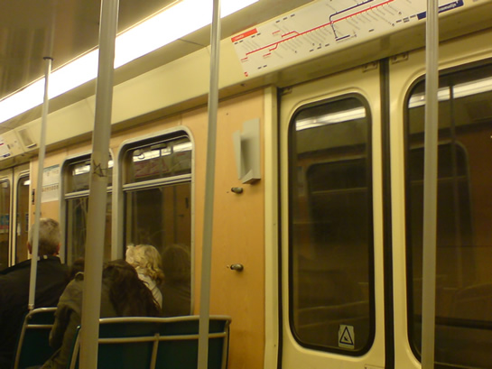
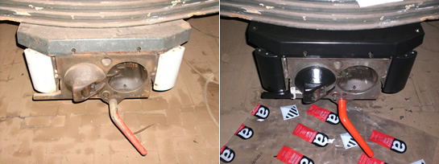
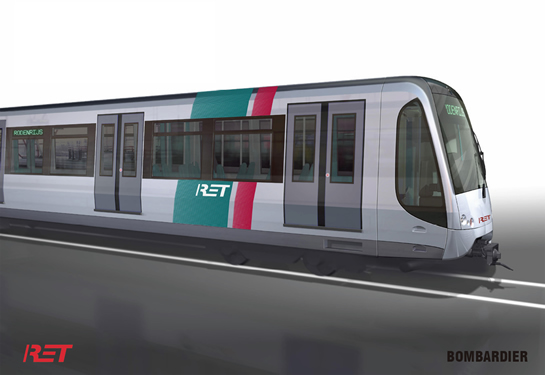
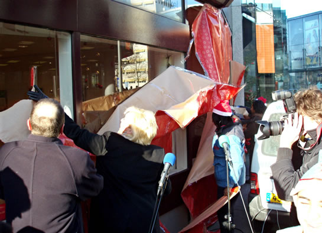

Diverse werkzaamheden op metronet en meer...
- maandag 01 december 2008 10:18
- Geschreven door Joachim
De afgelopen weken vinden er op het metronet diverse werkzaamheden plaats. Zo worden de sporen in het gebied rond de stations Dijkzigt, Coolhaven en Delfshaven vernieuwd. Ook sporen van wisselcomplexen worden vernieuwd. Deze werkzaamheden vinden in de nachtelijke uren plaats, zodat overdag geen hinder ontstaat voor de reizigersexploitatie.
Op het emplacement 's-Gravenweg werd onlangs een aantal hoge lichtmasten geplaatst. Hierdoor is het terrein 's nachts beter verlicht en in combinatie met het onlangs gerealiseerde hekwerk zal dit onbevoegden de toegang tot het terrein moeilijker maken.
5301
Ook de A-bak van rijtuig 5301 is afgeleverd bij de Centrale Werkplaats Kleiweg voor een midlife-proefrevisie. De bakken staan nog wel gesplitst in de werkplaats. Welke werkzaamheden uitgevoerd gaan worden aan de rijtuigen op technisch en cosmetisch gebied is nog niet geheel duidelijk.

Wagenbak A van rijtuig 5301 staat op spoor 5 van de Centrale Werkplaats Kleiweg.

Dezelfde wagenbak gezien vanaf de achterzijde.
5238
Rijtuig 5238 is voorzien van folderhouders bij alle instapdeuren. De folderhouders zijn bijzonder vormgegeven. Het is niet duidelijk wat voor informatie er aangeboden gaat worden in de houders.

Aan de linkerkant van de instapdeur is een folderhouder gemonteerd.
5024
De automatische koppelingen van rijtuig 5024 werden door de werkgroep Metro van de stichting RoMeO geheel gereviseerd. Tevens werden ze teruggebracht in de originele kleuren. Waar nodig werden onderdelen vervangen. Op de onderstaande foto is het resultaat te zien. De werkzaamheden aan het interieur liggen momenteel stil, daarom wordt gewerkt aan de revisie van de vier stroomafnemers.

De gereviseerde koppelingen van rijtuig 5024. Vanzelfsprekend links vóór revisie en rechts ná revisie.
Dienstregeling jaarwisseling
In verband met festiviteiten rondom de jaarwisseling zullen er dit jaar tot ongeveer 02.30 uur extra metro's ingezet worden op de Erasmuslijn tussen station Slinge en het Centraal Station. De metro's stoppen alleen op de stations Slinge, Wilhelminaplein, Leuvehaven en Centraal Station. Tussen 23.45 uur en 0.15 uur wordt er niet gereden.
Uitgezonderd van bovengenoemd traject gaan de laatste metro's tussen 20.00 en 21.00 uur naar de remise. Dat geldt ook voor de RandstadRail Erasmuslijn.
 Gedetailleerde informatie op ret.nl
Gedetailleerde informatie op ret.nl
RET sluit contract met Bombardier
Op 4 december sloot de RET een contract met Bombardier Transportation voor de fabricage en levering van 43 metrostellen voor de Caland- en Erasmuslijn. Met de order is een bedrag van € 140 miljoen gemoeid. De nieuwe metrostellen zullen sterk lijken op de rijtuigen die nu in aanbouw zijn voor de RandstadRail Erasmuslijn. Er is een optie voor nog eens 21 rijtuigen voor de Hoekse Lijn. Het eerste nieuwe metrorijtuig zal geleverd worden vanaf juni 2009.
De nieuwe metrostellen bieden plaats aan 270 passagiers, zijn 42 meter lang en zijn uitgerust met een modern ventilatie- en airconditioningsysteem. Verder worden de metrostellen voorzien van het MITRAC-systeem van Bombardier. Dit systeem kan het metrorijtuig voorzien van hoogspanning op plaatsen waar op dat moment geen hoogspanning aanwezig is, door een calamiteit of verstoring.

Impressietekening van het nieuwe metromaterieel.
RET Servicewinkel heropend
Op 19 december werd de RET Servicewinkel aan de Coolsingel 141 in Rotterdam heropend. De winkel heeft in het afgelopen half jaar een metamorfose ondergaan. De winkeluitstraling veranderde, maar ook staat service richting de klant meer centraal. Nieuw in de RET Servicewinkel is ondermeer de RET-souvenirshop waar vooral de RET-liefhebber terecht kan voor mokken, tassen, boeken, video's, paraplu's en modeltreinen die allemaal kenmerken van de RET dragen.
Voorts is er een mini-expositie over het 40-jarig bestaan van de Rotterdamse metro te zien. Een vitrinekast is ingericht met onderdelen uit de oude rijtuigen Type M, in combinatie met historische foto's en folders. Daarnaast is er een expositie in samenwerking met het Gemeentearchief van Rotterdam over 80 jaar communicatie met de reiziger: "Gedraag U!".

Met het letterlijk uitpakken van de winkel door algemeen directeur Pedro Peters en de servicemedewerkers, was de opening een feit (foto: Jan van Huijksloot).
Foto van de Maand
In verband met het lage aantal inzendingen voor de maandelijkse Foto-update, staat de nieuwe Foto-update gepland voor de derde vrijdag van januari 2008. Het thema is "40 jaar Rotterdamse metro", daarom zijn we vooral op zoek naar foto's uit het verleden. Foto's kunnen ingestuurd worden tot en met vrijdag 12 januari 2008.
Laatste nieuwsitem 2007
Naar alle waarschijnlijkheid was dit het laatste nieuwsitem van het jaar 2007. Het team van retmetro.nl wenst u prettige kerstdagen en een gezond en voorspoedig 2008!